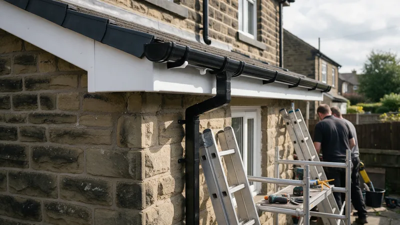

What actually comes out
On a house with trees over it, leaves. On a house with nothing anywhere near it, something people are always surprised by: moss, and the fine grit that washes off the surface of the tiles year after year. That settles into a heavy black silt and it ends up at the low end of the run and around the outlet, which is the worst place for it. It is why a gutter on an open estate with no trees can still block solid.
So a clean is not just lifting leaves out. It is getting the silt out of the bottom of the run, clearing the outlet, and then checking that the downpipe is actually taking water rather than holding a plug of sludge halfway down.
How we do it
By hand from a ladder or a low tower, working along the run, with the muck going into a bucket rather than over the side. Then a look along the whole length while we are up there, because this is the one job where somebody is at eye level with every joint and bracket on the house.
Vacuum poles from the ground have their place, mostly on a run nobody can get a ladder to. They are not as good at the silt at the bottom and they cannot see anything. If we have to use one on a difficult run we will say so, and say what we could not check from down there.
The free bit that matters
While somebody is up there, they can see what you cannot: which joints have a tide mark under them, which brackets have started to pull, whether the run has a belly in the middle, whether the soffit has gone soft at one end. You get told all of it, with a photograph where it is worth seeing, and no pressure attached. Plenty of those are a job for three years' time and we would rather say that.
 Generated photo
Generated photoGenerated for this demo. Not a photograph of a real job.

Generated photoDeeper profiles hold more silt before they stop moving water. Generated for this demo.
On the job
How this one usually goes.
- Set up where we can reach safelyLadder footed properly or a low tower where the ground is awkward, and nothing stood on a conservatory roof or a flat roof that will not take it.
- Clear the run by handAlong the length, into a bucket, both the leaves on top and the silt underneath. The silt is the part that was blocking the outlet.
- Clear the outlet and check the pipeThe outlet is the narrowest point on the whole system, so it comes out and gets cleared, and then water goes down to make sure the pipe is taking it.
- Walk the run and look at the jointsEvery joint, bracket and union at eye level, which only happens on this job. Tide marks, drips, a dropped section, soft timber.
- Bag it and clear upThe muck goes away with us rather than into your border or down the gully. Splashes washed off the wall and the path swept.
A sample running order for this demo. Yours depends on the house and what we find when the board comes off.
Questions
Asked about this job.
How often should they be cleaned?
Once a year for most houses. Twice where there are sycamores, limes or conifers over the roof, once after the autumn leaves and once in late spring. Longer than a year is often fine on an open plot with nothing overhanging, but have one look before you decide to stretch it.
Do I have to be in?
Not for the gutters, as long as we can get round the back. If there is a locked gate or a dog in the garden, that is the thing to sort out beforehand rather than on the morning.
Will you clean the conservatory gutter?
Yes, and it is one of the ones most worth doing, because when it overflows the water goes straight into the junction with the house wall. The access takes longer, because nothing can be stood on the glass, so it is a tower or a ladder with a stand off from the lawn.
Are leaf guards worth it?
A cage in the outlet, nearly always. Full length guards work well under leafy trees and badly under conifers, because the fine needles and seeds mat on top of the guard where nobody can see or reach them. No guard means never cleaning it again, whatever the box says.
General trade knowledge written for this demo, not advice on your property.
Our work
Sample jobs like this.
Generated photoWhat came out of forty feetWhalley Sample Generated photoA stain that shows the jointClitheroe Sample
Generated photoA stain that shows the jointClitheroe Sample Generated photoA cage in the outletRibchester Sample
Generated photoA cage in the outletRibchester Sample Generated photoThe seal, not the gutterGreat Harwood Sample
Generated photoThe seal, not the gutterGreat Harwood SampleMade up samples with generated pictures. Tap one for the detail.
Also
The other things we do.
Gutter repairs and replacement
A dripping joint, a dropped bracket, a run that holds water in the middle. Most of it is a length and a seal rather than the whole set.
More →Fascias and soffits
The board the gutter hangs off and the board underneath it. Old timber comes off, the roof edge gets looked at, and the vents go back in.
More →Cladding and bargeboards
The sloping boards up the gable and the panels nobody can paint safely any more. Done while the access is already up, not next year.
More →Downpipes
Clips into the mortar, a swan neck that actually clears the eaves, and the bottom going into a gully rather than on to the path.
More →Roofline replacement in uPVC
Fascia, soffit, gutter, bargeboard and the gable, all changed together in one go. One set of access, one mess, one finish.
More →Shall somebody come and look up at it?
Tell us which side of the house and your postcode. If it is pouring over tonight or a pipe has come off the wall, use the urgent line instead.